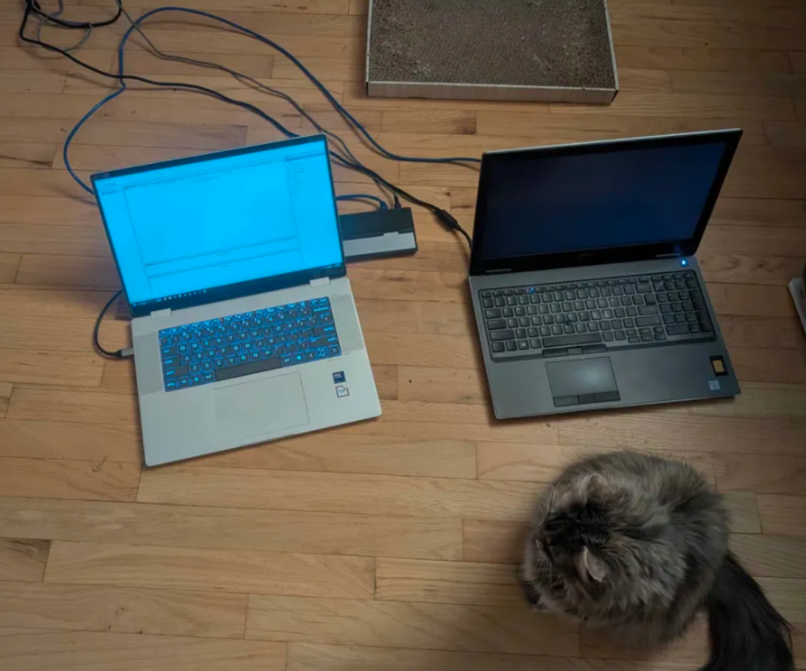
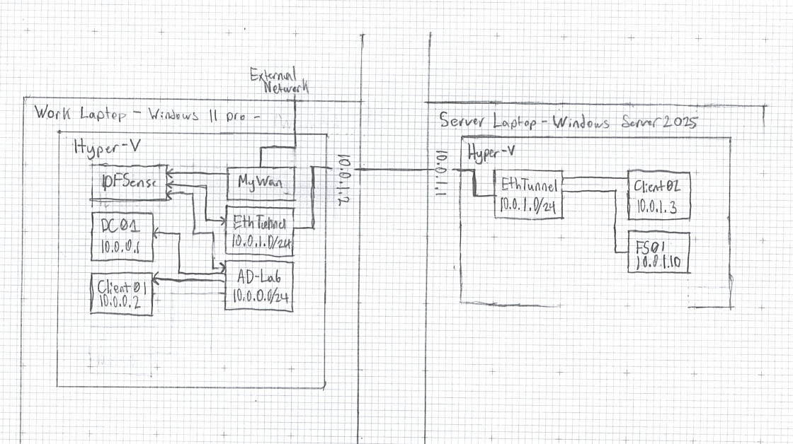

This is my Portable Lab
I've been going to school for Internetworking for a few years now.
While I have learned a lot, I've always gotten stuck on Active Directory.
It is very complex and I learn best when I can mess around hands-on, so I decided to build my own.
This only covers the hardware side of my setup. It was too much to put in one page, so if you would like to see the Active Directory side, go here.
Now I had some constraints.
- I need to be able to work on it from anywhere.
- I want it to have internet.
- It needs to run at least 4 virtual machines.
I have a Proxmox server at home with plenty of processing power. The problem with that is my school blocks external connections. Without setting up a proxy that can bypass the school's network, I can't use that. I could use a Linode, AWS, or Azure server, but I'm broke. I ended up just using my school laptop to start out.
My school laptop has a Core Ultra 7 and 16 GB of RAM. Pretty good, but I can't run anything more than 2-3 VMs without closing every other app running on the PC. Despite this, I downloaded a copy of Windows 11 Pro, Windows Server 2025, and a copy of pfSense.
Attempt 1: The first build
One machine, just my school laptop. Pretty simple: 3 VMs, 1 Private Switch, and 1 Default Switch.
I started with pfSense for creating a central router. I connected my external default switch to the pfSense WAN and the private switch to the pfSense LAN. If you're wondering, I used 10.0.0.0/24 for the internal network.
After that, I created the Windows Server and Windows 11 Pro VMs. This was pretty straightforward. Grab the ISO, create the VMs, and install.
I created the first Windows Server VM and named it DC01, which will be the VM that runs the whole network.
Then I created the Windows client, which I named CLIENT01. With the VMs made, I set up Active Directory on DC01 and enabled DHCP. With that enabled, I was able to ping CLIENT01 from DC01.
This is when I had to cut back on the dedicated RAM and finagle my system to use it.
I need to be able to do research while working, and my only options were to use my phone or close and reopen the web browser every time I changed a VM, so I needed another solution.
"Upgrade the RAM," I thought. After a few minutes, I realized that acquiring DDR5 SO-DIMM RAM is not cheap right now, and again, I'm broke.
Attempt 2: Split the load
Now I had a crazy idea. I thought, why not just use a second laptop? I have a second laptop that is a beast.
I don't use it because it's clunky and I enjoy the touchscreen of my school laptop.
The beast in question is the Dell Precision 7540: an 8-core, 16-thread workstation laptop with a built-in Quadro RTX 3000.
It also only has 16 GB of RAM, but I figured it would be enough to run at least 3 VMs.
Now my plan was to connect the two laptops directly with an Ethernet cable, then use the Hyper-V "Connect to Server" feature so that I could control the VMs from my school computer.
I grabbed the equipment, set up the networks, and configured the firewall to allow traffic between the computers. I learned about CredSSP authentication and set up my school laptop to pass credentials to the workstation laptop.
Once I got the hardware set up and configured, I was able to connect to cwserver.local from cschool.local.

The next step was internetworking the VMs and the physical adapter. Before, I was able to use an external network passed to my pfSense, which handles the internal private network switch of Hyper-V.
That wouldn't work now that I have two separate networks: 10.0.1.0/31 for connecting the computers and 10.0.0.0/24 for managing the internal network of the VMs. My solution, which I'm not proud of, works for now and will be fixed in the future.
I expanded the physical external network connecting the two machines to 10.0.1.0/24 and set up pfSense to pass the traffic between the 10.0.1.0 and 10.0.0.0 networks.
Then I set up DNS and DHCP on pfSense to redirect queries to the Windows Server VM at 10.0.0.10.
For the VMs, I duplicated the server and client over to the workstation laptop. I created a generic CLIENT02 VM and an FS01 to get started with file sharing.
I got them connected to the domain and the DNS just worked. I was able to ping DC01 from FS01, which was 10.0.0.10 from 10.0.1.10.
Now at this point I've got a solid setup. pfSense properly routes the traffic, I have 2 servers and 2 clients, and I've set up groups and users for a fake company.
I really just need to work on the actual AD side to learn more about how to use it.

Bigger and Better
DDR5 RAM was too expensive, but that's exactly why I bought this workstation laptop. It is EXTREMELY upgradeable. I ordered 2x8 GB SO-DIMM sticks and am going to upgrade the workstation to run all the VMs.
Hopefully, 32 GB of RAM should be enough for at least 6 VMs on that one machine.
====================================================
I AM ACTIVELY WORKING ON THIS PAGE
COME BACK IN THE FUTURE TO SEE THE REST
====================================================